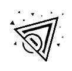
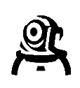
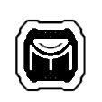

| SAGE | |||
| Q - ORBE DE LENTIDÃO | E - ORBE CURATIVO | C - ORBE DE BARREIRA | X - RESSURREIÇÃO |
| EQUIPE um orbe de lentidão. DISPARE para lançá-lo. O orbe detona ao pousar, criando um campo duradouro que desacelera os jogadores dentro dele. | EQUIPE um orbe curativo. DISPARE com a mira sobre um aliado ferido para ativar uma cura ao longo do tempo. Use o DISPARO ALTERNATIVO enquanto Sage estiver ferida para ativar uma autocura ao longo do tempo | EQUIPE um orbe de barreira. DISPARE para posicionar uma parede sólida. DISPARO ALTERNATIVO gira o marcador de alvo. | EQUIPE uma habilidade de ressurreição. DISPARE com a mira sobre um aliado morto para começar a revivê-lo. Depois de uma breve canalização, o aliado voltará com a Vida completa. |
| KILLJOY | |||
|  | |||
| Q - ROBÔ DE ALARME | E - TORRETA | C - NANOENXAME | X - CONFINAMENTO |
| EQUIPE um Robô de Alarme oculto. DISPARE para ativar um robô que persegue os inimigos que entram no alcance. Ao se aproximar do alvo, o robô explode, causando dano e aplicando Vulnerável. SEGURE EQUIPAR para retirar um robô ativado. | EQUIPE uma Torreta. DISPARE para ativar uma torreta que atira em inimigos em um cone de 180°. SEGURE EQUIPAR para retirar a torreta ativada. | EQUIPE uma granada Nanoenxame. DISPARE para lançar a granada. Ao atingir uma superfície, a Nanoenxame fica oculta. ATIVE a Nanoenxame para acionar um enxame de nanorrobôs que causam dano. | EQUIPE o dispositivo de Confinamento. DISPARE para ativá-lo. Após um longo processo de ativação, o dispositivo detém todos os inimigos no raio de alcance. O dispositivo pode ser destruído pelos inimigos. |
| CHAMBER | |||
|  |  | ||
| Q - CAÇADOR DE CABEÇAS | E - RENDEZVOUS | C - MARCA REGISTRADA | X - TOUR DE FORCE |
| ATIVE para equipar uma pistola pesada. Use o DISPARO ALTERNATIVO com a pistola equipada para mirar. | POSICIONA duas âncoras de teleporte. Enquanto estiver no chão e dentro do alcance de uma das âncoras, REATIVE para teleportar rapidamente até a outra âncora. Âncoras podem ser recuperadas para serem REPOSICIONADAS. | POSICIONA uma armadilha que busca por inimigos. Quando um inimigo visível entrar no alcance, a armadilha inicia uma contagem regressiva e desestabiliza o terreno ao redor, criando um campo duradouro que reduz a velocidade dos jogadores. | ATIVE para invocar um poderoso fuzil de precisão personalizado que abate um inimigo com qualquer acerto. Abater um inimigo cria um campo duradouro que reduz a velocidade dos jogadores dentro dele |
| CYPHER | |||
 |
|||
| Q - JAULA CIBERNÉTICA | E - CÂMERA DE VIGILÂNCIA | C - FIO-ARMADILHA | X - ASSALTO NEURAL |
| INSTANTANEAMENTE joga a jaula cibernética diante de Cypher. Ative para criar uma zona que bloqueia a visão e reduz a velocidade de inimigos que passarem por ela. | EQUIPE uma câmera de vigilância. DISPARE para colocar a câmera no local-alvo. REPITA a habilidade para controlar a visão da câmera. Enquanto controla a câmera, DISPARE para lançar um dardo marcador. O dardo revelará a localização de qualquer jogador atingido. | EQUIPE um fio-armadilha. DISPARE para instalar um fio acionador oculto e destrutível no local-alvo, criando uma linha entre o local e a parede oposta. Jogadores inimigos que passarem por um fio e não destruírem o dispositivo a tempo ficarão imobilizados, revelados e estonteados depois de um breve intervalo. A habilidade pode ser recolhida para ser REPOSICIONADA | Use INSTANTANEAMENTE num jogador inimigo morto na sua mira para revelar a localização de todos os jogadores inimigos ainda vivos. |